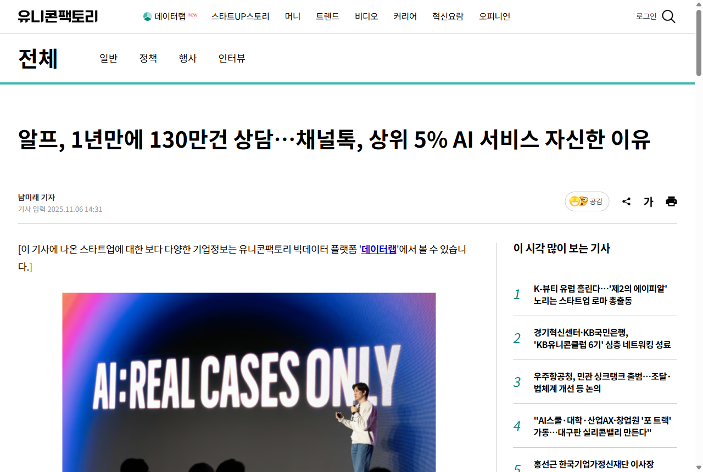

💬채널톡 · Channel Talk
마케팅 전략 제안 · Growth Marketer
고객이 원하는 건 '빠른 응대'가 아니라
문의가 안 생기는 것 — 채널톡으로 CS 인입을 줄이겠습니다
"도입해도 문의(인입)가 안 준다"는 시장의 진짜 불만에서 출발 —
왜 타 CS 솔루션은 못 줄이고 채널톡은 줄일 수 있는지, 그래서 어떤 증분을 만드는지 제안합니다.
채널코퍼레이션 · 채널톡
Growth Marketer 지원
이도형
공고가 정의한 '나의 역할'
데이터·고객 인사이트로 '수요(리드)'를 만들고,
세일즈와 함께 파이프라인을 키우는 그로스
💬채널톡
① 고객 중심
ICP·메시지 가설
고객 인터뷰·CS/세일즈 피드백·행동 데이터로 타깃·메시지 갱신
② 리드젠
하방 방어
월·분기 리드 목표를 분해하고 중단기 플랜으로 사수
③ 페이드미디어
채널 운영
Google·Meta·Naver·LinkedIn 전략·집행·최적화
④ 오퍼레이션
퍼널·어트리뷰션
GA4·Salesforce·Hex로 퍼널 리포팅·기여도 체계 운영
⑤ 세일즈 협업
리드 핸드오프
IS/FS와 리드 퀄리티·핸드오프 캘리브레이션
이 발표의 출발점
리드는 '시장의 진짜 수요'에서 나옵니다. 그래서 먼저 — 고객이 채널톡(CS 솔루션)에 진짜 바라는 것이 무엇인지부터 짚습니다.
먼저, 채널톡은 어떤 제품일까요
'올인원 AI 메신저' —
상담·CRM 마케팅·팀챗·커머스를 하나로
💬채널톡
- 무엇 — 채팅 상담 + CRM 마케팅 + 팀 메신저 + 커머스(주문·배송) 연동 + AI 알프(ALF)를 한 곳에
- 타깃 — 이커머스·소상공인·B2B (LG·오뚜기·대웅제약·SPAO 등)
- 도입 — 누적 약 18만 개사·22개국, 일본 +50% 성장
매출 350억
2025년(제3자 집계)
영업현금흐름 첫 흑자
무료 + 14일
무료 플랜·카드 없는
14일 체험(PLG)
channel.io
단, 핵심 강점인 CRM 마케팅·커머스 연동이 이번 전략의 열쇠입니다 (뒤에서)
시장 수요 진단 · 페인포인트
"도입해도 CS 인입(문의량)이 안 줄어든다"
💬채널톡
14%
셀프서비스 시도는 73%지만
완전 해결은 14%뿐 (Gartner)
60%
고객의 60%가
챗봇에 자주 실망 (Zendesk)
재문의
봇을 포기해도 '해결'로 집계 →
24~48시간 내 다시 문의
핵심 진단
AI·챗봇은 '응대(resolution)'를 빠르게 할 뿐, '인입(volume)' 자체는 안 줄입니다. 같은 문의가 계속 들어오죠. (실제로 한 쇼핑몰은 챗봇 도입 후 "오히려 CS가 늘었다") → 고객이 진짜 원하는 건 '빨리 처리'가 아니라 '안 묻게 되는 것'입니다.
그래서 시장의 진짜 수요는
문의의 대부분은 '안 물어도 될' 반복 문의입니다
💬채널톡
약 70%
커머스 CS 문의 중 배송예정일·주문확인·취소 등 단순·반복 비중 (채널톡)
35.1%
한국 쇼핑객 배송 만족 1위 요인 = 교환·반품·환불 편리성(속도보다)
- "내 주문 어디(WISMO)"·"언제 와요"·"취소해 주세요" — 예측 가능하고 반복되는 문의
- 이런 문의는 답을 잘 하는 것보다 애초에 안 묻게 만드는 것이 정답
즉 수요는 "문의를 잘 처리해줘"가 아니라 "문의가 안 생기게 해줘" — 이걸 푸는 회사가 시장을 가져갑니다.
📦
"제 주문 어디쯤이에요?"
가장 많고, 가장 예측 가능하고,
가장 안 물어도 되게 만들 수 있는 문의
경쟁사는 이렇게 한다
타 CS 솔루션은 '해결' 경쟁 — '인입'은 그대로
💬채널톡
Intercom · Fin
Intercom Fin — "해결 건당 $0.99" · Zendesk는 'Resolution(해결) Platform'으로 재정의
| 관점 | 타 CS 솔루션 | 진짜 수요 |
|---|
| 무엇을 판다 | '해결(resolution)' — 빨리 답한다 | '인입 감소' — 안 묻게 |
| 선제(proactive) 차단 | 유료 애드온·상한 약함 | 네이티브로 필요 |
| 커머스·주문 컨텍스트 | 한국형(알림톡·Cafe24) 없음 | WISMO 차단의 핵심 |
| 마케팅·CRM 결합 | CS 중심, 별도 SKU 분리 | 선제 안내·근본원인에 필요 |
읽어낸 핵심 — 글로벌 강자(Intercom·Zendesk)는 '해결 속도·자동화'로 싸웁니다. 하지만 인입을 '생기기 전에' 줄이는 무기(선제·커머스·마케팅 통합)는 비어 있습니다.
채널톡만의 USP · 왜 채널톡은 줄일 수 있나
'올인원'이라 문의를 '생기기 전에' 차단합니다
💬채널톡
🎯 USP · 상담·CRM 마케팅·커머스가 한 곳에 있어, '응대'가 아니라 '인입 감소'를 설계할 수 있다
① 선제 알림 (마케팅·CRM)
묻기 전에 먼저 알려준다
알림톡·SMS·온사이트로 배송·주문 상태 선제 안내 → "어디쯤?" 문의 차단
② 커머스·주문 연동
채팅 안에서 스스로 해결
주문조회·예상배송일·취소를 위젯에서(Cafe24·스마트스토어) → 상담 없이 끝
③ 알프(ALF) + FAQ
반복 문의를 흡수
상담 데이터에서 FAQ 자동 추출·AI 자율응대(반복문의 처리)
④ 근본원인 개선
'왜 묻는지'를 고친다
인입 데이터를 제품·운영·마케팅에 피드백(올인원이라 한 데이터로)
실제 자산 · ALF
"100건 문의 = AI가 80% 처리" + 주문·배송 연동 → '응대'를 넘어 '인입'까지 줄이는 구조
근거 · 실제로 인입이 줄었다
이스타항공 — 홈페이지 문의 6개월 -44%
💬채널톡
-44%
6개월 후 홈페이지 문의 인입
(1개월 -23%·전화 -19%)
74%
현재 AI(알프) 자동 해결률
(반복 문의 흡수)
- 인입이 '처리'가 아니라 '감소'했습니다 — 선제 안내 + 셀프 해결 + AI 흡수의 결과
- 알프 1년 누적 130만 건 상담, 2,000+ 사 도입 (자사 발표)
→ "도입해도 안 준다"의 예외가 채널톡 — 이게 마케팅으로 증명할 '시장 수요의 답'입니다.
유니콘팩토리 · 2025-11
"알프, 1년 만에 130만 건 상담" · 채널콘 2025 'AI: REAL CASES ONLY'
제품 진화 · 채널톡은 이렇게 바뀌어야
'상담 솔루션'에서 '인입을 줄이는 플랫폼'으로
💬채널톡
🎯 재포지셔닝 · "문의를 잘 받는 제품" → "문의가 안 생기게 하는 제품"
바뀔 점 ①
인입 대시보드
해결률 말고 인입률(문의÷주문)·재문의율을 메인 지표로 — 고객이 '줄었다'를 숫자로 본다
바뀔 점 ②
선제 차단 자동화
주문·배송 트리거 알림톡/SMS 원클릭 템플릿 — WISMO 자동 예방
바뀔 점 ③
근본원인 리포트
인입을 자동 카테고리화 → "이 문의 없애려면 이걸 고쳐라" 제안 (맥락·분류 약점 정면 개선)
바뀔 점 ④
ALF v2 'Task 종결'
취소·교환·반품을 AI가 실행해 문의를 답이 아니라 '종결'로
새 카테고리
측정(①) → 예방(②) → 종결(④) → 근본 개선(③)의 루프 = 채널톡이 선점할 '인입 감소 플랫폼'. '상담툴' 경쟁에서 빠져나오는 길입니다.
USP 전달 ① · 메시지 × 채널
"처리하지 말고, 안 생기게" — 수요 언어로 만난다
💬채널톡
🎯 핵심 메시지 · "문의를 빨리 처리하는 툴은 많다. 채널톡은 문의를 '줄이는' 툴이다"
| 채널 | 타깃 & 의도 | 핵심 메시지 | 소재 / 콘텐츠 |
|---|
| Google 검색 | "CS 문의 줄이기"·"챗봇 도입 효과 없음"·"인터콤 대안" | "AI로 답만 빨라졌나요? 인입을 줄이세요" | 인입 진단 + 이스타 -44% 사례 |
| Naver | 국내 이커머스·쇼핑몰 사장님 | "배송 문의, 묻기 전에 알림톡으로 끝" | 업종별 인입 감소 사례 |
| Meta / IG | 이커머스 운영자(리타겟·룩어라이크) | 도입 후 문의량↓·CS 인력 여유↑ | 고객사례 영상·Before/After |
| LinkedIn | CX/CS 리더·mid-market·일본 | "해결률 말고 '문의당 비용·인입률'을 보라" | 리더십 콘텐츠·ABM |
왜 이렇게? — 경쟁사가 '해결(resolution)'을 외칠 때, 채널톡은 고객이 진짜 원하는 '인입 감소'를 선점하는 메시지로 차별화합니다.
USP 전달 ② · 이렇게 '실제로' 집행합니다
검색 의도 → 인입 진단·사례 → 14일 체험 → 세일즈
💬채널톡
광고 · Google
channel.io/cs-인입줄이기
챗봇 깔아도 문의 그대로? 인입을 줄이세요
선제 알림+주문연동으로 '묻기 전에' 해결. 이스타항공 문의 -44%. 카드 없이 14일.
② 랜딩
인입 진단 + 사례
"우리 문의의 몇 %가 배송·주문 반복?" 진단 → 이스타 -44%·알프 80% 사례로 증명
③ 전환
카드 없는 14일 체험
선제 알림·주문연동 즉시 셋업
→
④ 리드
스코어링·핸드오프
인입 많은(=ROI 큰) 고객을 SQL로 → IS/FS
→
⑤ 측정
GA4·Hex·Salesforce
채널→체험→인입감소→계약 기여도
핵심 자산 활용 — 채널톡이 이미 가진 고객사례(이스타 -44%·알프 해결률)·채널콘·마케팅 레시피를 '인입 감소'를 증명하는 ROI 증거로 재활용합니다.
모객 → 전환 · 제품 단 변경
체험 안에서 '인입이 줄었다'를 느껴야 전환된다
💬채널톡
🎯 전환의 핵심 · '가치(인입 감소)까지의 시간'을 줄이는 온보딩 — 마케터 × 제품 공동 설계
전환 레버 ①
온보딩 = 선제 알림·주문연동부터
가입 즉시 WISMO 차단 세팅을 첫 단계로 → 가치까지의 시간(time-to-value) 최소화
전환 레버 ②
'인입 감소' 아하 모먼트 정의
"14일 내 선제 알림 1건 + 인입 −N% 확인"을 전환 임계로 역설계(Slack '메시지 2,000건'식)
전환 레버 ③
체험 중 Before/After 인입 리포트
"도입 전 vs 후 문의 −X%"를 체험 화면에서 즉시 보여줘 결제 근거 제공
전환 레버 ④
가치 기반 페이월
무료엔 맛보기, 본격 선제 차단·근본원인 리포트는 유료 게이팅으로 업셀
마케터의 역할
모객으로 데려와도 제품이 14일 안에 '인입 감소'를 증명하지 못하면 전환은 안 됩니다. 그래서 고객 데이터로 아하 모먼트를 정의하고 제품팀과 온보딩을 함께 설계합니다 (공고: 크로스펑셔널 협업).
기대 증분 · 성공했을 때
인입이 줄면, 비용은 내려가고 매출은 올라갑니다
💬채널톡
→
💸
상담 비용 ↓
셀프 $1.84 vs 유인 $13.5
→
→
→
무엇을 보고 판단할까 (KPI)
| 관점 | 핵심 지표 |
|---|
| 인입(★) | 인입률(문의 수 ÷ 주문 수) · 재접촉률 |
| 자동화 | 선제 차단율 · AI 자동 해결률 |
| 비용 | 문의 1건당 비용 · 상담원당 처리량 |
| 매출 | 상담→구매 전환 · CRM 캠페인 매출 |
마케터의 한 줄
"해결률(resolution)이 아니라 인입률(volume)을 KPI로 — 그래야 고객의 진짜 ROI를 증명하고, 그게 곧 채널톡의 차별화된 리드가 됩니다."
※ 인입 감소엔 CSAT 가드레일 필수(무리한 차단 방지). 목표치는 내부 기준값 확인 후 확정.
왜 나여야 하는가 · 공고 요건 1:1
'데이터로 근본원인을 찾는 커머스 그로스'
💬채널톡
| 공고가 원하는 것 | 제 포트폴리오 증거 |
|---|
| 페이드미디어 직접 운영(Google·Meta·Naver…) | 커머스에서 매체 직접 운영·ROAS/CAC 최적화, Web2App 브릿지로 전환의 '질' 개선 |
| 고객을 직접 만난 경험 | 실제 채널톡 사용 중 — '인입이 안 준다'는 페인을 직접 체감해 이 전략을 도출 |
| GA4·Amplitude·Hex + SQL | BigQuery로 실구매·CAC·재구매율 직접 산출, 라스트터치 한계 인지·코호트 분석 |
| 데이터로 인과 검증 | 등급제·쿠폰 ROI를 인과까지 따져 재검증 — '인입의 근본원인'도 같은 방식으로 분석 |
| AI 활용 / 가설-실험-학습 | AI로 분석·콘텐츠·전략 자산을 빠르게 만들고, 한 번에 하나씩 A/B로 검증 |
한마디
"리포트를 위한 리포트가 아니라 숫자·결과로 말하는 마케터" — 게다가 채널톡을 직접 쓰는 고객의 시선까지 가졌습니다.
💬채널톡 · Channel Talk
'응대를 잘하는 툴'이 아니라 '문의를 줄이는 툴'로 —
시장 수요를 리드로 증명하겠습니다
채널톡의 미션은 '고객의 지속가능한 성장'입니다. 고객이 진짜 원하는 건 빠른 응대가 아니라
문의가 안 생기는 것이고, 채널톡은 올인원(마케팅·커머스·CS)이라 그걸 해낼 수 있습니다.
저는 이 '인입 감소'라는 수요를 마케팅 메시지·캠페인으로 번역해, '해결' 경쟁에 지친 시장에서 차별화된 리드를 만들겠습니다.
채널톡을 직접 써본 고객으로서, 데이터로 근본원인을 찾고 숫자로 증명하는 그로스 — 직접 증명하겠습니다. 감사합니다.
이도형 · Growth Marketer
채널코퍼레이션 · 채널톡